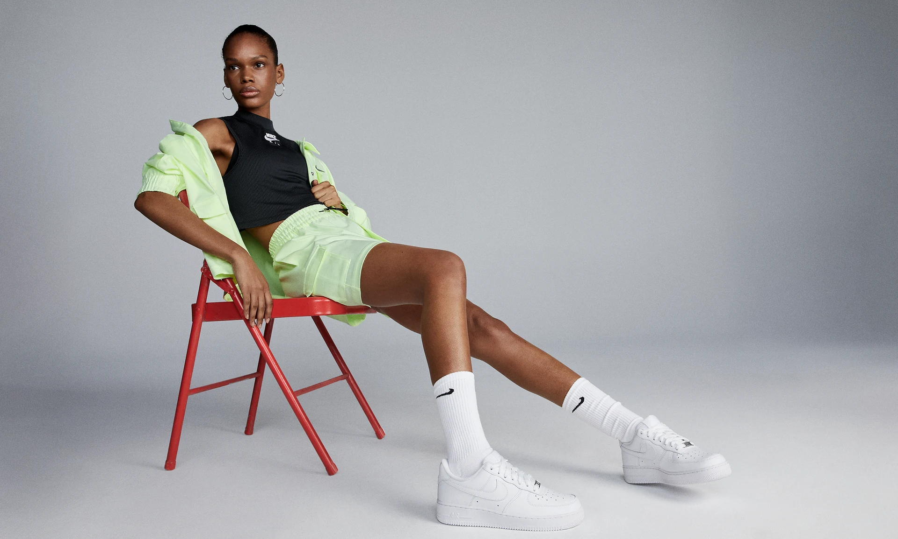
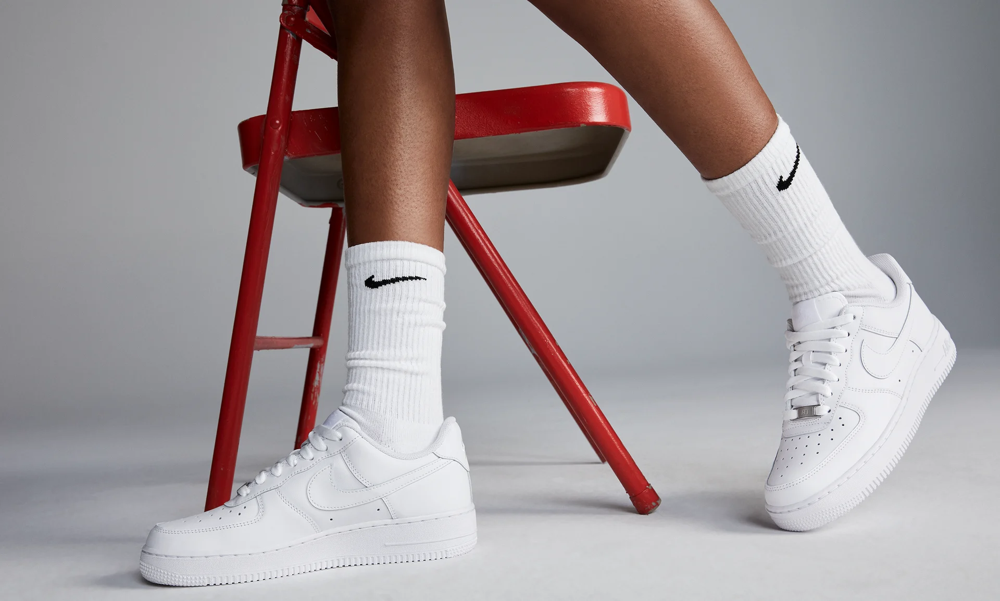
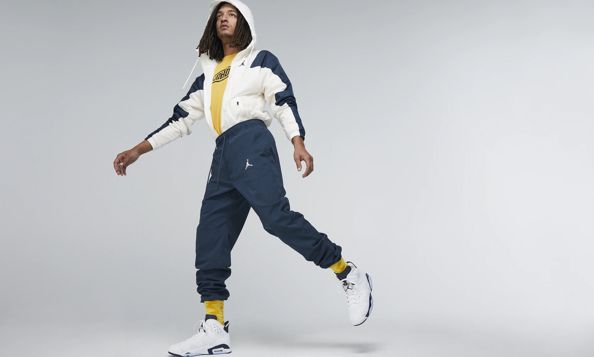
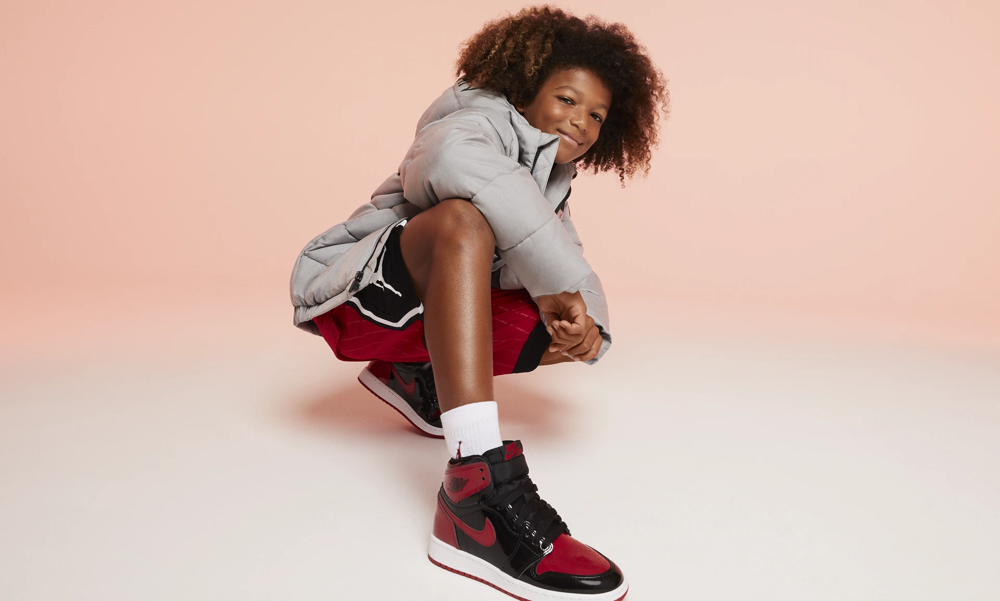
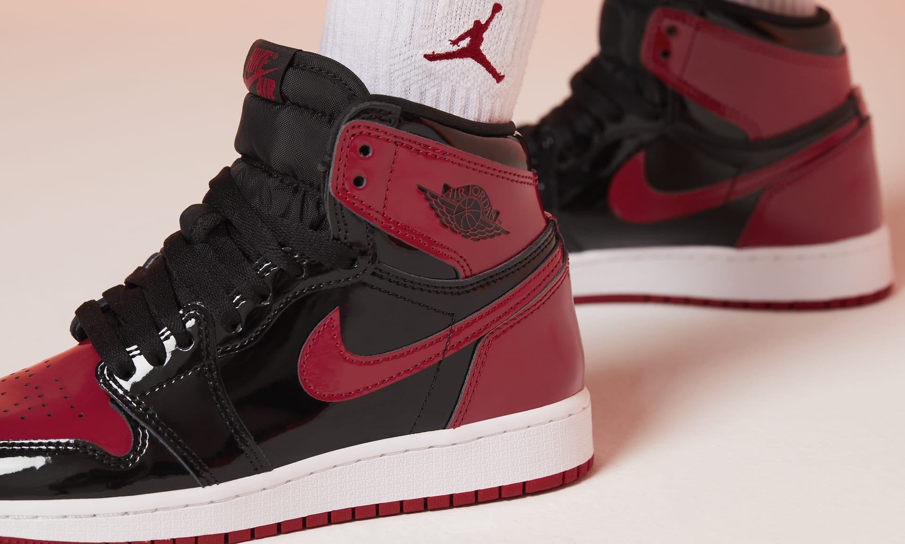
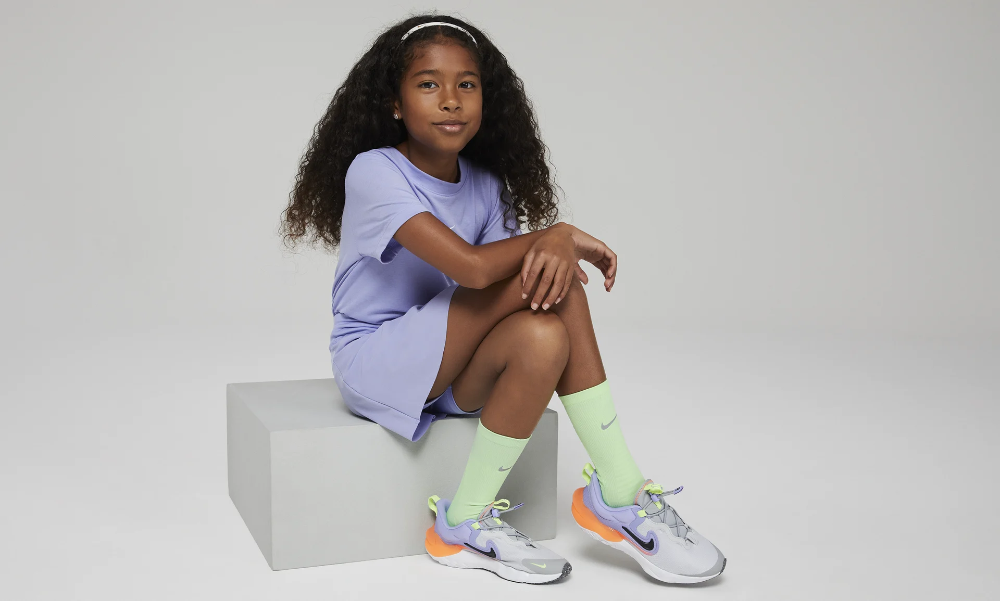
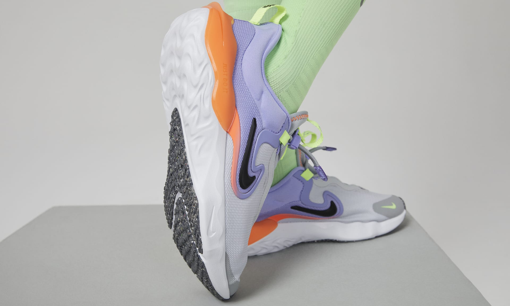

Get in Trend



~ The stitched leather overlays on the upper add heritage style, durability and support.
~ Originally designed for hoops, Nike Air cushioning adds lightweight, all-day comfort.
~ The low-cut silhouette adds a clean, streamlined look.


~ Leather and synthetic and textile materials.
~ Foam midsole with a visible Air-Sole unit in the heel and encapsulated Air-Sole unit in the forefoot.
~ Clear or solid rubber outsole depending on the colourway.


~ Premium construction delivers comfort and iconic appeal..
~ An encapsulated Air-Sole unit in the heel gives you soft cushioning.
~ It's cushioning that gives you the powerful energy.


~ The toggle system uses a super-easy pull-and-release closure.
~ Super-soft cushioning underfoot is lightweight and responsive to help you run and play confidently with every step.
~ Rubber on the front part of the outsole provides durable traction across multiple surfaces.